Displaying PTP Links¶
When one or more links have been created, they appear in the PTP Links tree view and can be opened in the Link Page. To display tree view, click the  beside the “PTP Links” menu in the navigation tree. To change to the table view, click on “PTP Links” menu in the navigation tree. To manage the table view see User Interface Tips.
beside the “PTP Links” menu in the navigation tree. To change to the table view, click on “PTP Links” menu in the navigation tree. To manage the table view see User Interface Tips.
If the link is displayed in red, it means that the predicted performance of the link is below requirements.
The PTP products have different types of links which are differentiated using the link icons as follows in the list view:
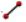 Link Type = 1+0
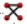 Link Type = 1+1 Hot Standby
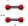 Link Type = 2+0 Co-Polar (ACCP)
Link Type = 2+0 Cross-Polar (ACAP)
Link Type = 2+0 Spatial Diversity (PTP 820C Only)
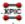 Link Type = 2+0 XPIC (CCDP)
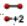 Link Type = 2+2 Co-Polar (ACCP)(PTP 820C/820A Only)
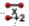 Link Type = 2+2 Cross-Polar (ACAP)(PTP 820C/820A Only)
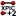 Link Type = 2+2 XPIC (CCDP)(PTP 820C/820A Only)
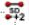 Link Type = 2+2 Spatial Diversity (PTP 820C/820A Only)
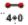 Link Type = 4+0 Co-Polar (ACCP)(PTP 820C/850C/820A Only)
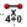 Link Type = 4+0 Cross-Polar (ACAP)(PTP 820C/850C/820A Only)
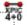 Link Type = 4+0 XPIC (CCDP)(PTP 820C/850C/820A Only)

To locate the links in the map view from the Links details page, click
 icon, which is displayed next to the
icon, which is displayed next to the  icon at the top.
icon at the top.
Deleting Links¶
To delete a PTP Link, hover over the PTP Link in the PTP Links tree view and click  , click
, click  on the details page, select rows and click
on the details page, select rows and click  in the table view, or right-click on the PTP link in the map view and select Delete from the pop-up menu.
in the table view, or right-click on the PTP link in the map view and select Delete from the pop-up menu.
To revert the changes made, click the
 icon in the PTP links details page, which is displayed next to the Apply button. This icon is only displayed when there are changes to the parameters, replacing the icon.
icon in the PTP links details page, which is displayed next to the Apply button. This icon is only displayed when there are changes to the parameters, replacing the icon.
Viewing & saving the list in MS Excel¶
To view the list in Excel, click while in the table view. Once in the spreadsheet the file can be saved as normal.